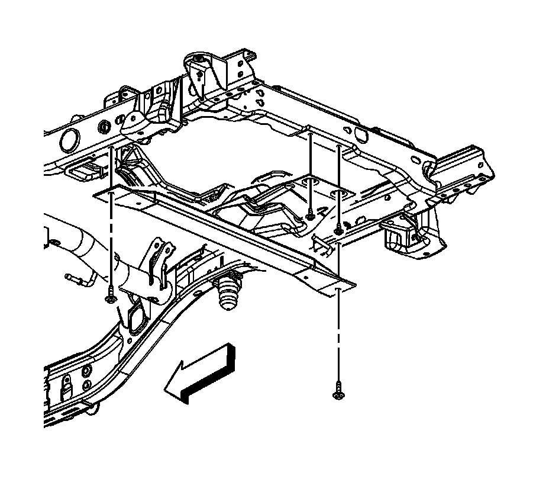
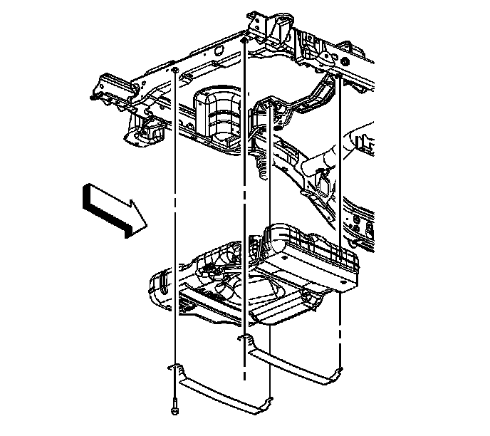

Evaporative Emission (EVAP) Hoses/Pipes Replacement - 2500 LWB - Intermediate
EVAPORATIVE EMISSION SYSTEM HOSES/PIPES REPLACEMENT (2500 LWB - INTERMEDIATE)
REMOVAL PROCEDURE
IMPORTANT: Clean all fuel and evaporative emission (EVAP) line connections and surrounding areas prior to disconnecting the lines in order to avoid possible fuel and/or EVAP system contamination.

1. Relieve the fuel system pressure. Refer to Plastic Collar Quick Connect Fitting Service.
2. Remove the spare tire stowage lock cylinder.
3. Remove the spare tire.
4. Drain the rear fuel tank. Refer to Fuel Tank Draining (Dual Tanks - Front) Fuel Tank Draining (Dual Tanks - Rear) Fuel Tank Draining (Single Tank). Service and Repair
5. Remove the rear exhaust insulator.

6. Remove the spare tire hoist crossmember bolts and crossmember.

7. Disconnect the rear fuel tank EVAP line quick connect fittings from the EVAP canister.

8. Disconnect the fuel and EVAP intermediate line quick connect fittings from the front tank lines.

9. Disconnect the chassis harness electrical connector (1) from the fuel pressure sensor.

10. Support the fuel tank with a suitable jack.
11. Remove the fuel tank strap bolts.
12. NOTE: Refer to Damage to Fuel Tank Straps notice.
Remove the fuel tank straps.
13. With the aid of an assistant, lower the rear tank until the intermediate line connections can be reached.

14. Disconnect the fuel and EVAP intermediate line quick connect fittings from the rear tank.

15. Remove the fuel and EVAP intermediate line assembly.
16. Cap the fuel and EVAP lines in order to prevent possible EVAP/fuel system contamination.
INSTALLATION PROCEDURE
1. Remove the caps from the fuel and EVAP lines.
2. Install the fuel and EVAP intermediate lines.
3. Connect the fuel and EVAP intermediate line quick connect fittings to the rear tank.
4. With the aid of an assistant, completely raise the rear tank.
5. Install the fuel tank straps.
6. NOTE: Refer to Fastener Notice.
Install the fuel tank strap bolts.
Tighten the bolts to 40 N.m (30 lb ft).
7. Remove the adjustable jack from under the fuel tank.
8. Connect the chassis harness electrical connector (1) to the fuel pressure sensor.
9. Connect the fuel and EVAP intermediate line quick connect fittings to the front tank lines.
10. Connect the rear tank EVAP line quick connect fittings to the EVAP canister.
11. Install the spare tire hoist crossmember and bolts.
Tighten the bolts to 50 N.m (37 lb ft).
12. Install the rear exhaust insulator.
13. Install the spare tire.
14. Install the spare tire stowage lock cylinder.

15. Install the fuel tank filler housing.
16. Install the fuel tank filler housing to fuel tank fill pipe bolts.
Tighten the bolts to 2.3 N.m (20 lb in).

17. Install the fuel tank filler housing to body TORX(R) screws (1) and retainer (2).
Tighten the screws to 2.3 N.m (20 lb in).
18. Refill the fuel tank.
19. Install the fuel fill cap.
20. Connect the negative battery cable.
21. Use the following procedure in order to inspect for leaks:
1. Turn the ignition ON, with the engine OFF, for 2 seconds.
2. Turn the ignition OFF for 10 seconds.
3. Turn the ignition ON, with the engine OFF.
4. Inspect for fuel leaks.
22. Install the intake manifold sight shield.